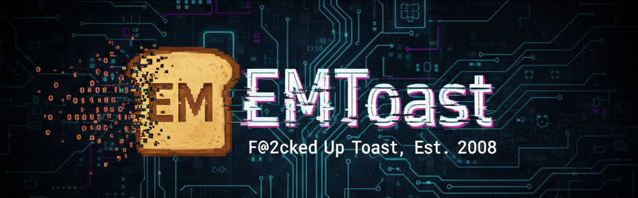
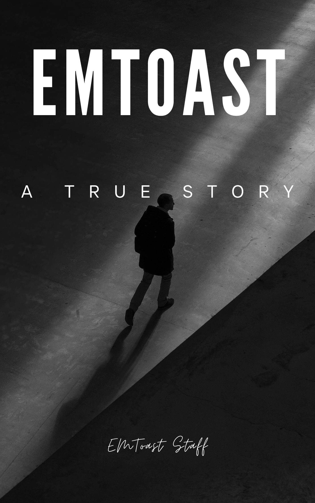

Podcast: Why EMToast Has Survived Since 2008


Well friends, we've been feeding the content of EMToast directly into AI to see what kind of scrambling can be done. Surprisingly, it seems to understand the site better than a lot of the foot fetish, dolphin loving freaks that used to visit in the old .com days. I have done a bunch of these using NotebookLM. I find them amusing so I will be posting them to https://www.youtube.com/@EMToast
Transcript:
Host 1: OK, so you know those websites, those websites with headlines that are just, you know, so out there, you can't tell if they're real or satire?
Host 2: Yeah, that's EM.
Host 1: Toast.
Host 2: Ohh.
Host 1: OK.
Host 2: Effed up toast.
Host 1: Even the name, It's like, what am I even getting myself into it?
00:14
Host 1: And you sent me some of their headlines.
Host 2: Yeah.
Host 1: And let me tell you, they're wild.
Host 2: They're wild.
Host 1: Right alright we're talking robot parades we're talking coffee that makes you live 500 years OK and wait for it a garage door achieving enlightenment.
00:28
Host 2: Enlightened garage doors.
Host 1: I have so many questions that's the vibe, right yeah and to help us unpack all of this, all of this, we've got joining us today expert speaker who specializes in.
Host 2: Expert speakers, relevant field, for example, digital culture, satire and humor, media studies, et cetera.
00:46
Guest Expert: Yes, hello, glad to be here.
Host 1: So experts speaker, what's the deal with EM toast?
Host 2: What jumps out at you the most from all this?
00:55
Guest Expert: Well, you know what's really fascinating here is this blend of absurdity and cultural commentary. Like they're so intertwined. Take the headline, man. Shocked to learn most of his opinions not actually his own.
Host 1: Yeah, it's funny, right?
Host 2: But it's relatable.
Host 1: It is.
Host 2: In the age of social media, how much of what we think is really our own?
01:14
Host 1: Yeah, that's a really good question, right? And EM Toast doesn't shy away from those anxieties, right?
Host 2: Not at all. They've got headlines like Amazon. To launch new service that will allow customers to buy products just by looking at them.
01:27
Host 1: Umm. I mean, that's hilarious, but also kind of creepy.
Host 2: Ohh. Absolutely. Yeah. It's brilliant commentary on corporate surveillance. Yeah. You know, erosion of privacy. And then there's the Elon Musk brain implants one. Yeah.
01:40
Host 2: FDA, you guys, Elon Musk's brain. Implants. People now think they're him.
Guest Expert: Exactly. And it plays on our very real worries about losing our individuality in a world where technology is becoming more and more central to our lives.
01:53
Host 2: Yeah. So like, are we becoming more like our technology? Is our technology becoming more like us? Like, where's the line?
Host 1: It's so blurry. Very blurry these days. But it's not all doom and gloom though, right?
02:06
Host 1: There's a lot of humor in EM. Toast.
Host 2: Ohh, absolutely right. Yeah. I mean, I laughed out loud at the garage door. Achieves enlightenment. Humanity still stuck.
Host 1: It's a classic. It's pure, unadulterated escapism.
02:16
Host 1: It's a release, right?
Host 2: Yes. They exaggerate the absurdity of everyday life, and that lets us just laugh at the chaos. Feel a little less overwhelmed by it all. And they've been doing this for a long time. They have.
02:29
Host 2: I mean, these headlines you sent over, some of them were from way back in 2008. Wow. And there was one about A and it's a completely different tone, but it's like ****** viciously beaten by victims children during attack. Like it's almost like edgy. For the sake of being edgy.
02:45
Host 2: Right, Right. Right. And that shift in tone, I think, is really telling. Yeah. You know, early Internet humor often pushed boundaries just for the shock value, Right. But as online space has evolved, so did satire. Yeah.
02:57
Host 2: And EM toasts. More recent headlines, I think, show this move towards social commentary and absurdity. And I think that. Reflects the changing landscape of online humor as well. It's like EM TOS has become like a time capsule for Internet culture.
03:10
Host 2: Yeah, they preserve these snapshots of how we process the world around us through something as, I mean, as seemingly simple as a funny headline.
Guest Expert: Exactly. Exactly. Exactly. And it makes you wonder, what will EM Toasts headlines look like in another 5-10 years, right?
03:24
Guest Expert: What new anxieties and absurdities will we be laughing at then?
Host 2: Now those are questions worth pondering, but before we get too lost in the future of Effectu Toast, I want to take a closer look at how they craft this very unique brand of humor.
03:37
Host 2: OK, you mentioned a few of the recurring themes, and I'm curious, how does their obsession with coffee tie into all of this?
Guest Expert: Ah, yes, the 500 year lifespan coffee. Yes, a recurring motif that seems to be a fan favorite.
03:50
Guest Expert: Yeah, I think it speaks to our cultural obsession with longevity. OK, with finding that quick fix that magic bullet to cheat aging and death.
Host 2: So we are back and you're listening to the deep dive.
04:04
Host 1: They are. We're diving deep into the world of EM Toast and Tool. Yeah. You know, they're very unique brand of digital satire, trying to figure out what makes them tick. Yeah. You know, for a website called FDU Toast, they've given us a lot to chew on, haven't they?
04:16
Host 1: They really have. And that's what I love about good satire. You know, it's not just about cheap laughs. It makes you think, question things. Yeah, maybe even. See the world in a new light, Right?
Guest Expert: Exactly.
04:27
Guest Expert: And that's what makes them, too, so fascinating. You know, they've managed to carve out this really unique niche for themselves as purveyors of the absurd. But within that absurdity, there's this surprising amount of depth.
Host 2: Let's talk about that depth.
04:40
Host 2: We've touched on how their headlines often reflect our anxieties about technology. Social media, the future in general. But what are they actually trying to tell us through these observations? Like, what's the message behind the madness?
04:51
Guest Expert: Well, that's the beauty of satire, right? Right. It's open to interpretation. It invites you, the audience, to really engage with that material and draw your own conclusions. But if we look at some of their recurring themes, like, we can start to see these broader critiques.
05:05
Guest Expert: Emerge OK like their fixation on that 500 year lifespan coffee for instance right right right on the surface it's just this ridiculous notion but I think it speaks to this very real desire we all have for more time for a way to cheat aging and death OK so it's not really about the coffee at all not really I mean it's about our relationship with.
05:26
Guest Expert: I am with mortality and maybe even our tendency to buy into hype, especially when it comes to technology and its ability to solve all of our problems. EM TOS is playfully questioning our priorities here. You know, asking us, are we so focused on living longer that we're missing out on truly living in the present?
05:43
Host 2: That's a great question and it makes me think. About, you know, how much of our lives we actually just spend online these days. Does em toast ever touch on that tension between, you know, the digital world and the real world?
05:57
Guest Expert: Absolutely. And, you know, remember that headline area, man shocked to discover self worth not tied to social media metrics. That's a clear jab at our obsession with online. Validation and, you know, this pressure to present this perfect image of ourselves to the world.
06:11
Host 2: Ohh yeah. And what about the one where the man sues streaming giant for binge watching addiction?
Guest Expert: Yes, yes. Like it's funny, but also it's very real. It's like it's a real thing. It shines a light on how addictive those services can be and how they can really take over our lives if we're not.
06:26
Guest Expert: Fearful, right Exactly, exactly.
Host 2: It's making us think about it's making us think how these digital habits are shaping our behaviors, our relationships, even our sense of self. It's almost like EM toast is giving us this gentle nudge, you know, like hey, this digital world is a wild ride, but let's not forget to like check in with ourselves and.
06:47
Host 2: Sure. We're still kind of grounded in reality.
Guest Expert: Exactly. It's all about finding that balance, that healthy skepticism, right? It's about being aware of the ways in which technology can both enhance and detract from our lives, right?
06:59
Guest Expert: And I think that's what makes EM Toast so effective. You know, it's not like they're beating you over the head with a message, right? It presents these absurd scenarios. And kind of lets you connect the dots yourself. It's like sneaking broccoli into a chocolate chip cookie, you know?
07:14
Host 2: Huh. I love that analogy. It's great delivering that aha moment through humor, which somehow makes it even more impactful.
Host 1: So we've established that EM Toast isn't just about random absurdity. Like there's a method to their madness, but not everyone.
07:28
Host 1: Was the impetus right? Humor is subjective.
Host 2: Ohh, absolutely. What would you say to those who might find their brand of humor, you know, two out there too niche or even, like, a bit juvenile?
07:39
Guest Expert: Sure. Yeah, you're absolutely right. Humor is subjective. Not every joke is going to land for every person, but I think that's OK, you know, for those who enjoy absurdities. Social commentary, Intellectual playfulness.
07:50
Guest Expert: EM toast offers something truly unique, right?
Host 2: And what about the name? Like, what about F TECU toast? I imagine that's a turn on for some people.
Guest Expert: Perhaps. Perhaps. But I think it's important to remember that EM toast doesn't take itself too seriously, and in a world where everything online can feel so.
08:08
Guest Expert: Polished and curated, you know, that in itself, I think can be refreshing.
Host 2: That's a very good point. So how does their brand of humor contribute to that sense of not taking things too seriously?
08:18
Guest Expert: Well, disarms you, right?
Host 2: Yeah.
Guest Expert: That name, those headlines, it's all a signal to kind of let your guard down, embrace the absurdity and maybe even laugh at yourself a little bit in the process because. Let's face it, the world can be a pretty absurd place.
08:32
Host 2: Truer words have never been spoken, right? And as we navigate this ever evolving digital age, I think we need spaces like EM Toast. Spaces that allow us to laugh at the chaos and find humor in the unexpected, and maybe even learn something about ourselves along the way.
08:46
Host 2: Which brings us to the heart of what we're trying to. Uncovered today. Why does any of this matter? We'll be back after the break to tackle that very question.
08:57
Host 1: And we're back with a deep dive. We're wrapping up our exploration of em toast.
Host 2: We are. We've talked about their brand of humor, their social commentary, their ability to like hold up a mirror to our digital anxieties.
09:10
Host 2: We covered a lot of ground.
Host 1: A lot of ground from enlightened garage doors.
Host 2: Yes, to the philosophical implications of 500 year lifespan coffee. To keep us on our toes.
Host 1: They really do. But before I let you go, I want to touch on something that we haven't quite unpacked yet, and that's EM Toasts longevity.
09:28
Host 1: OK, they've been around since 2008, right? What is it about their brand of humor that's allowed them to not just survive but thrive for so long?
Guest Expert: Well, I think it speaks to their.
09:39
Guest Expert: Ability to adapt and evolve alongside Internet culture you know they're not afraid to poke fun at new trends, new technologies, new anxieties as they emerge and they've captured the zeitgeist like these headlines you sent me this spanned over 15 years exactly it's it's incredible like they've managed to stay relevant and that's no small feat in the.
09:59
Guest Expert: Ever changing landscape of the digital world.
Host 2: You know, it's like they have this finger on the pulse of what we're all thinking and feeling, but maybe don't always say out loud, you know?
10:09
Host 1: Right.
Host 2: They give us permission to just laugh at the absurdity of it all because whether it's fear of missing out or the pressure to be constantly connected or just the ever increasing. Role technology plays in our lives. There is a lot to be anxious about.
10:24
Host 2: There is these days.
Host 1: Ohh, absolutely. So if EM Toast is this reflection of our digital anxieties, our fascination with technology, our shared human experience in this increasingly strange and wonderful world, what does their enduring appeal tell us about ourselves?
10:39
Guest Expert: That is the $1,000,000 question, and I think there are many answers, but if I had to choose one, I'd say it suggests a certain self-awareness, You know, like we recognize the absurdity of the world around us, and we're willing to laugh at it, at ourselves even.
10:53
Host 2: Yeah, we're in on the joke.
Guest Expert: Exactly. Exactly. Exactly. And that shared laughter, that ability to find humor in the unexpected.
Host 2: Yeah, that.
Host 1: Can be a powerful force for connection and understanding.
11:03
Host 2: It's been a fascinating deep dive into the world of EM toast.
Host 1: It has what started as a bunch of effed up headlines right turned into a surprisingly insightful conversation about humor, about technology, about the human condition in the digital age.
11:20
Guest Expert: Yeah, it's amazing how much we can learn about ourselves and the world around us just by paying attention to what makes us laugh, isn't it?
Host 2: It's true. It's so true. Yeah. So the next time you come across an EM Toast headline, take a moment to appreciate the absurdity.
11:34
Host 2: But also consider the deeper layers of social commentary, of cultural reflection that might be lurking beneath the surface. You might be surprised at what you find.
Host 1: You really might.
11:44
Host 1: Thanks for joining us for this deep dive into the wonderfully weird world of EM Toast. Until next time, keep exploring, keep questioning, and keep laughing at the absurdity of it.
Related posts

EMToast Ebook (2008–2023) now on Internet Archive
The EMToast Complete Ebook (2008–2023) is now available on the Internet Archive as its permanent home. This is a full…

EMToast: Top 10 Zombie Sightings
To prepare for the upcoming Halloween celebrations, EMToast has done extensive market research and delved deep into EMToast personal memory…

Tell Me Sincerely, Are You Living?
"Snippets with Racter" quoted from our conversations with the artificial intelligence simulator Racter (authored by William Chamberlain and Thomas Etter;…
EMToa.st: The Successor to EMToast.com
The EMToast project has launched https://emtoa.st as its new primary domain, retiring the original emtoast.com address. The domain change closes…